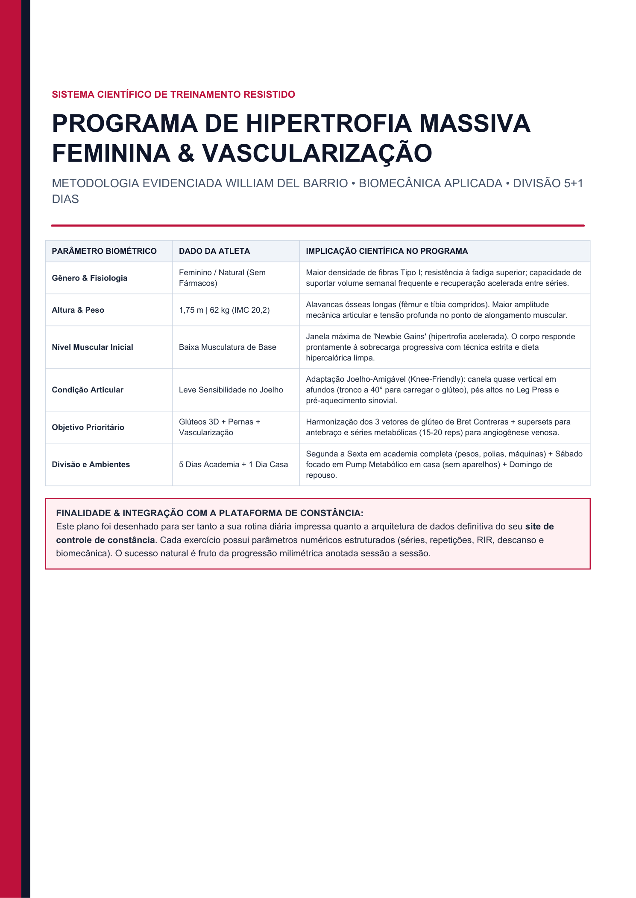
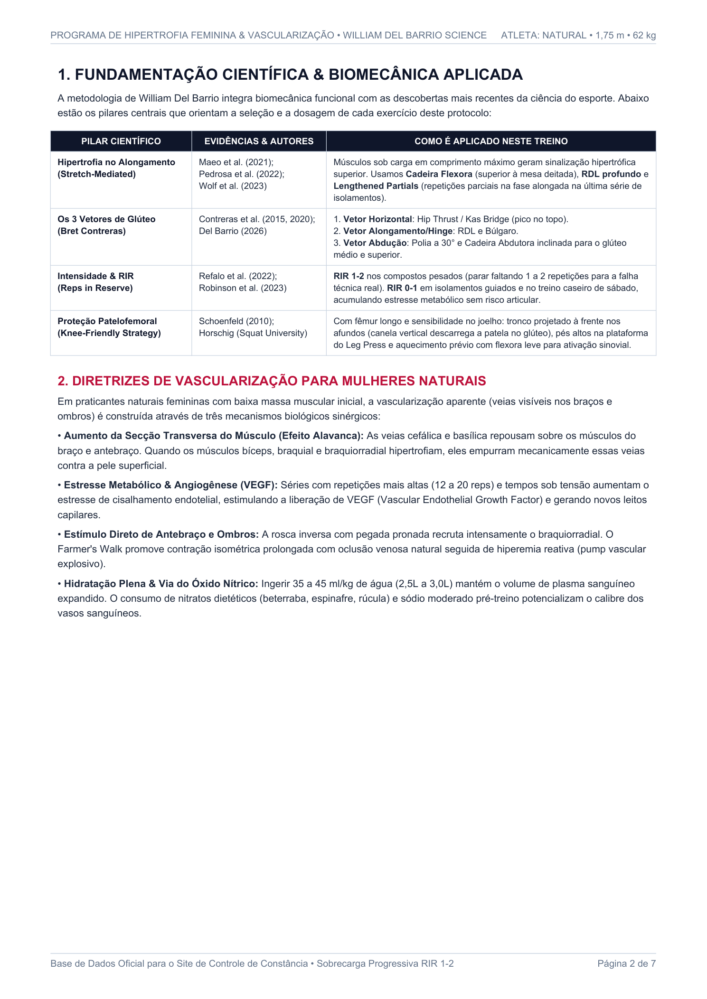
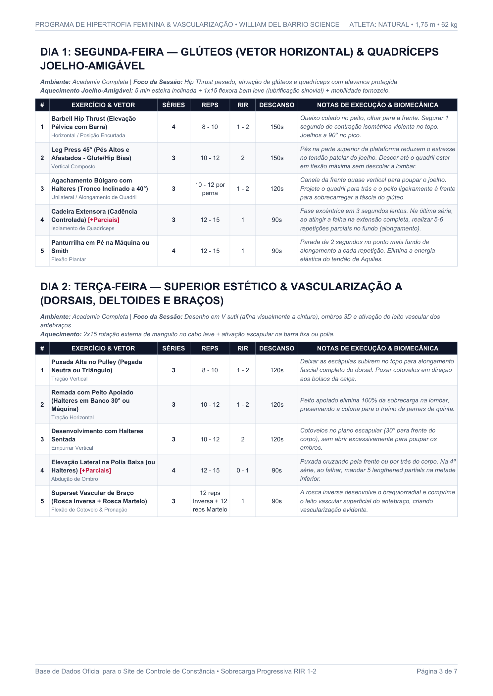
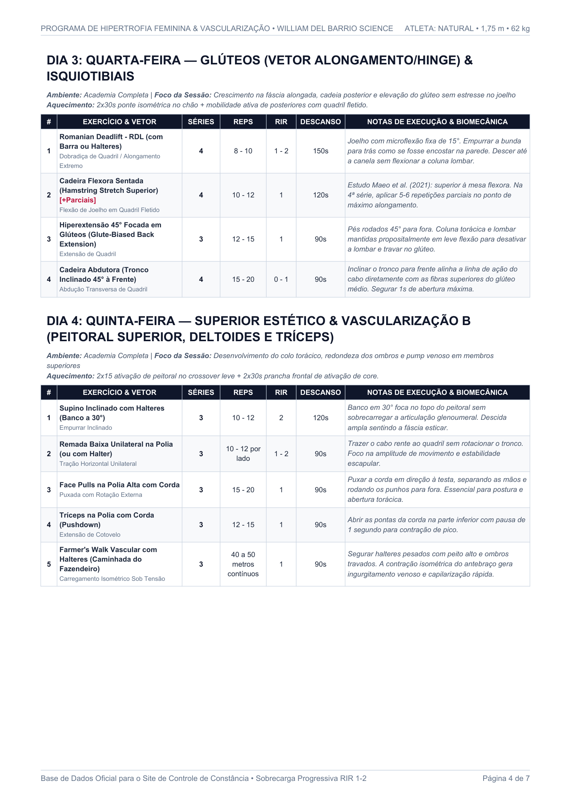
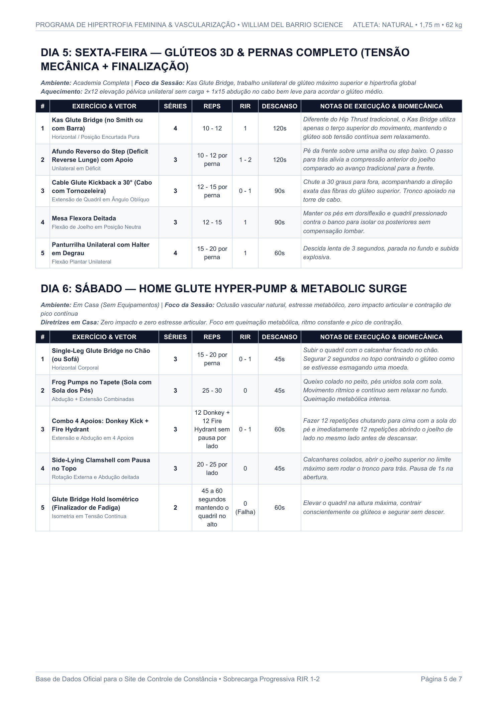
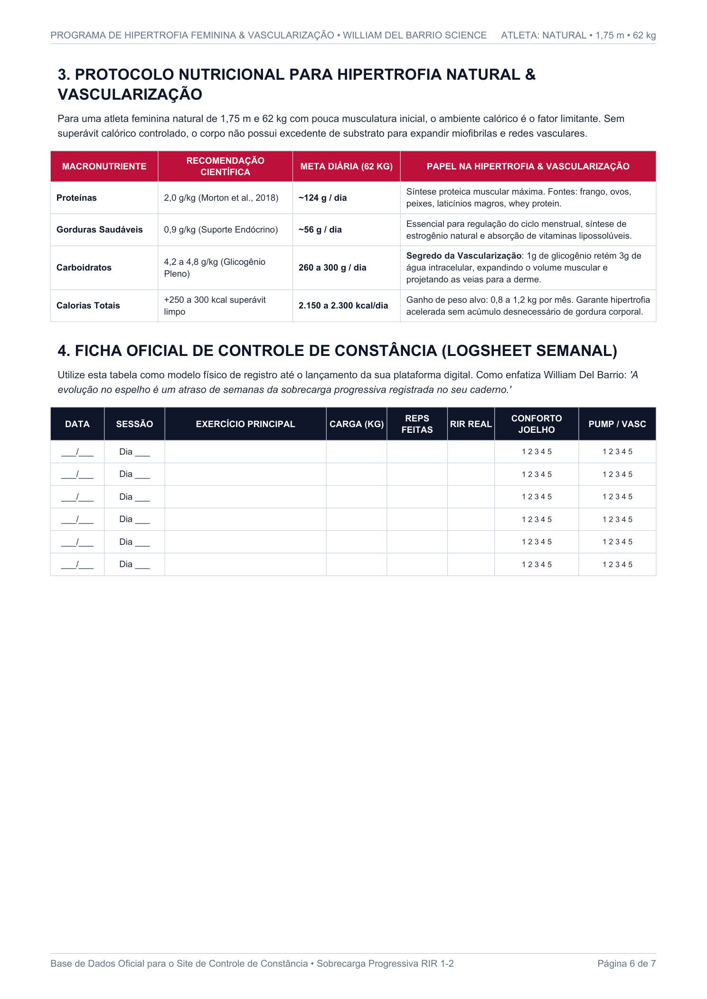
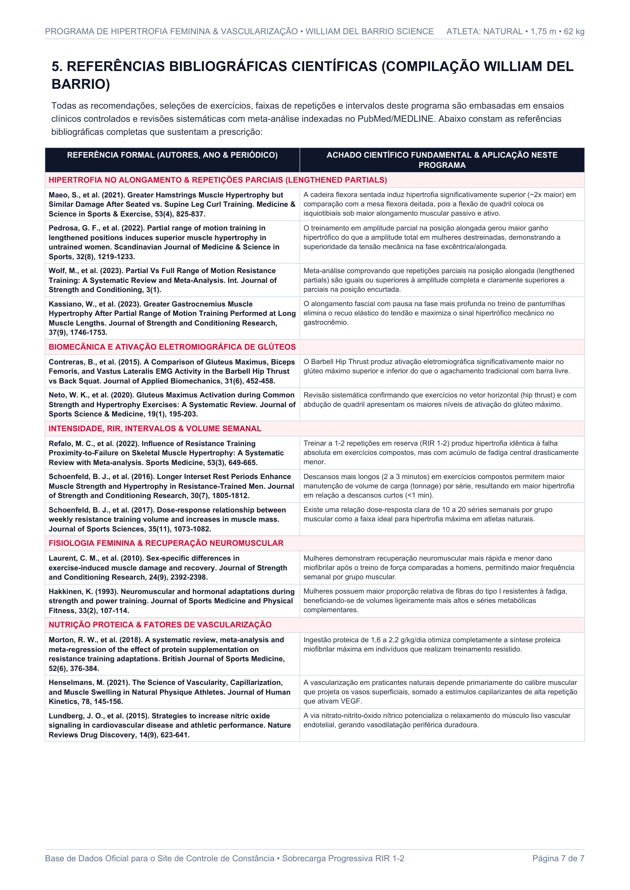

Fundamentação Biomecânica & Cinesiológica
Síntese dos 3 Vetores de Glúteo, Proteção Patelar & Tensão em Alongamento
Pico de Tensão em Encurtamento Máximo (0° Extensão)
Exercícios: Barbell Hip Thrust (Seg) & Kas Glute Bridge (Sex).
Mecanismo: Maior ativação eletromiográfica (EMG) de todas as fibras do glúteo máximo sem carga axial compressiva na coluna (Contreras et al., 2015).
Dano Mecânico Controlado & Mecanotransdução via Titina
Exercícios: RDL (Qua), Búlgaro c/ Tronco Inclinado 30° (Seg/Sex) e Leg Press Pés Altos.
Mecanismo: Tensão máxima quando o quadril está fletido (70°–100°), gerando hipertrofia longitudinal superior (Maeo et al., 2021).
Glúteo Médio, Mínimo & "Upper Shelf" (Projeção 3D)
Exercícios: Abdução no Cabo em Pé no Plano Escapular de 30° & Cadeira Abdutora Inclinada 45°.
Mecanismo: Alinha perfeitamente a linha de tração das fibras superiores do glúteo e estabiliza a pelve contra o valgo dinâmico (Moore et al., 2020).
Bioenergética, Óxido Nítrico & Volume Plasmático
Superávit limpo controlado (+200 a +250 kcal acima do TDEE de ~2.150 kcal) para hipertrofia densa mantendo percentual de gordura baixo para definição vascular.
Meta diária de 115g a 130g fracionada em 4 refeições de ~30g de proteína rica em Leucina para saturar a via mTORC1 nas 24h pós-treino (Morton et al., 2018).
Cada 1g de glicogênio intramuscular atrai ~3g de água para dentro da célula, gerando turgor muscular 3D nos glúteos e empurrando as veias contra a derme.
Sem volume sanguíneo adequado não há vasodilatação periférica nem lubrificação sinovial patelar. Meta mínima de 2,8L a 3,0L por dia.
Controle de Volume Sanguíneo & Lubrificação Sinovial
O sangue é composto por ~90% de água no plasma. Manter 2.800 ml/dia garante pressão endotelial máxima na veia cefálica, basílica e plexo dorsal do antebraço durante os treinos de Terça e Quinta.
Sobrecarga Progressiva, RIR & Planilha de Constância
| DATA / DIA | EXERCÍCIO & NOTAS TÉCNICAS | SÉRIE | CARGA | REPS | RIR | JOELHO | PUMP | AÇÃO |
|---|
Literatura Científica PubMed & Documento PDF Oficial






